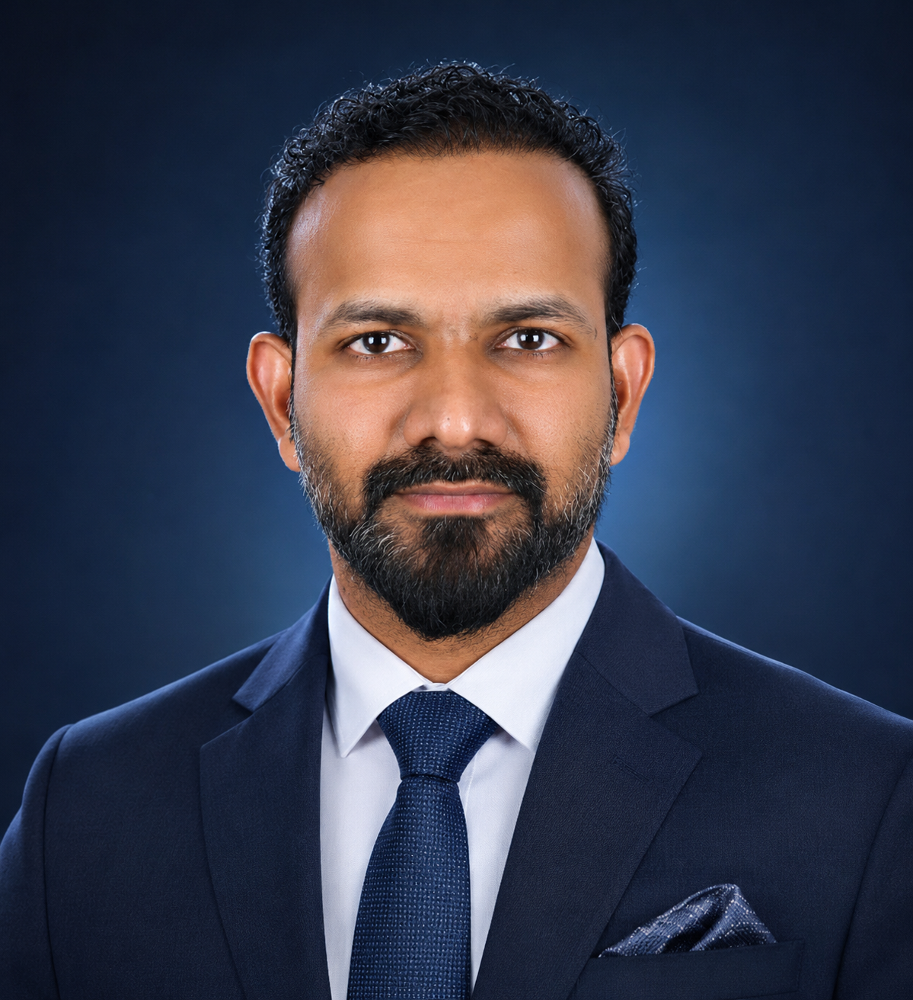

Anoop
Parakkalakath.
Translating complex business challenges into scalable technology solutions. Focused on enterprise architecture, API ecosystems, system integration and digital transformation.

About Me
I am an IT professional with over 18 years of experience across enterprise integration, application architecture, API management and technology transformation. My work centres on connecting complex systems, enabling digital services and translating business requirements into sustainable technical solutions.
Areas of Expertise
Enterprise Integration
Oracle Service Bus, SOAP, REST APIs, system orchestration and interoperability.
API Management
Azure API Management, API lifecycle, security, governance and integration.
Solution Architecture
TOGAF principles, solution design, architecture patterns and cloud technologies.
Certifications & Expertise
Combining architectural frameworks, cloud knowledge and enterprise engineering experience to shape scalable digital solutions.
Architecture & Technical Expertise
Technology & Expertise
A blend of architectural thinking, enterprise engineering and hands-on technical expertise.
Architecture & Design
Application Engineering
API & Integration
Cloud & Enterprise Platforms
DevOps & Engineering Tools
Delivery & Leadership
Professional Experience
A journey of continuous growth across enterprise technology, engineering and integration.
Integration Lead (Enterprise Systems)
Ministry of Labour · Doha, Qatar
Contributing to large-scale government platforms through enterprise integration, API architecture, application delivery and system modernisation.
Technical Lead
Wipro
Led development teams delivering enterprise-scale applications, overseeing technical design, end-to-end delivery, quality and stakeholder coordination.
Development Team Lead
Systems Valley
Led development teams delivering enterprise applications while managing project timelines, resource allocation and delivery quality.
Software Developer
DLI IT Systems India
Contributed to software development and application delivery.
Software Programmer
Curvature Infosolutions
Began professional career in software programming and application development.
Let's Connect
Open to meaningful conversations around enterprise architecture, integration, technology strategy and digital transformation.